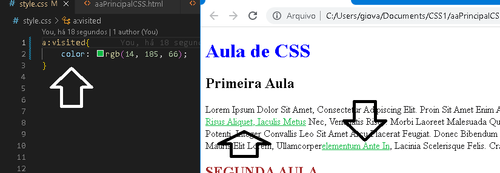

Para você acessar outro local, dentro ou fora da sua página.
O link, normalmente é destacado, por ser azul e está sublinhado.
Mas pode ser modificados, mudando a cor do link, o desenho do cursor do mouse,etc..
O código:
main p{
-------color: rgba(31, 28, 179, 0.514);
-------text-indent: 2rem;
}
LINKS
Link
Pseudo Seletores
a : active
a : active
defini aparti do CSS, de acordo com o estado do html.
Active = mostra que o link está ativo, mudando a regra nesse momento.
Quando você clica ele vai mudar de cor, essa é regra que foi passada pra ele .
O código:
a:active{
-------color: red;
}
a : visited
Mostra se o link já foi clicado, mudando ele de cor .
O código:
a:visited{
-------color: rgb(14, 185, 66);
}
Como fica na página:
a : visited
Mostra se o link já foi clicado, mudando ele de cor .
O código:
a:visited{
-------color: rgb(14, 185, 66);
}
Como fica na página:
a : hover
Quando você passa o mouse sobre o link, ele já muda de cor.
Pode ser usado em outros elementos também.
O código:
a:hover{
-------color: rgb(14, 185, 66);
}